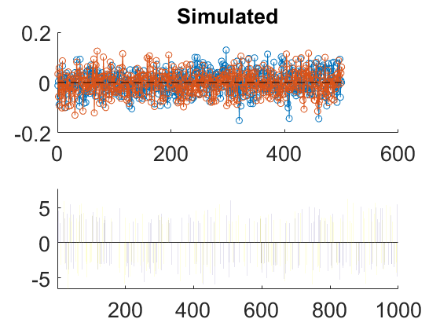
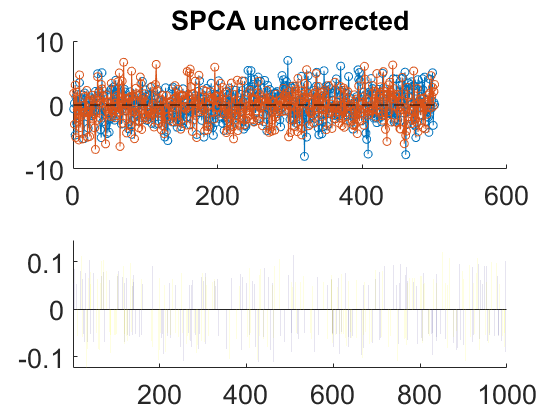
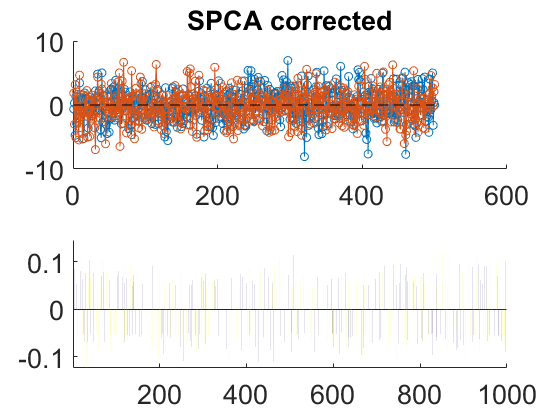

Contents
Data simulation
clear
close all
clc
pev = @(A,B) 1 - (norm(A - B,'fro')^2)/(norm(A,'fro')^2);
pcs = 1:2
obs = 500
vars = 1000
sparsity = 80
s2n = 80
ridge = Inf
nonzero = round(vars*(1-sparsity/100));
X = randn(obs,vars);
[U,D,V] = svd(X,0);
U = U(:,pcs);
D = D(pcs,pcs);
V = V(:,pcs);
for i = pcs
kk = sort(abs(V(:,i)),'descend');
V(find(abs(V(:,i))<kk(nonzero)),i) = 0;
V(:,i) = V(:,i)/norm(V(:,i));
end
P = V*D;
T = U;
X = T*P';
E = randn(size(X));
f = sqrt((1-s2n/100)*(norm(X,'fro')^2)/((s2n/100)*(norm(E,'fro')^2)));
X = X + f*E;
pcs =
1 2
obs =
500
vars =
1000
sparsity =
80
s2n =
80
ridge =
Inf
SPCA simultaneous uncorrected (SPCA I)
vec = nonzero*ones(size(pcs));
p7 = spca_zouhastie(X, [], max(pcs), ridge, -vec);
t7 = X*p7;
sig = sign(diag(P'*p7));
sig(find(sig==0)) = 1;
p7u = repmat(sig',vars,1).*p7;
t7u = repmat(sig',obs,1).*t7;
CS_LW_u = cossim(V,p7u)
CS_S_u = cossim(T,t7u)
PEV_u = pev(X,t7u*p7u')
CS_LW_u =
0.9998
CS_S_u =
0.9997
PEV_u =
0.8002
SPCA simultaneous corrected only with P (SPCA II)
vec = nonzero*ones(size(pcs));
p7 = spca_zouhastie(X, [], max(pcs), ridge, -vec);
t7 = X*p7*pinv(p7'*p7);
sig = sign(diag(P'*p7));
sig(find(sig==0)) = 1;
p7c = repmat(sig',vars,1).*p7;
t7c = repmat(sig',obs,1).*t7;
CS_LW_c = cossim(V,p7c)
CS_S_c = cossim(T,t7c)
PEV_c = pev(X,t7c*p7c')
CS_LW_c =
0.9998
CS_S_c =
0.9997
PEV_c =
0.8003
SPCA simultaneous properly corrected (SPCA III)
vec = nonzero*ones(size(pcs));
p7 = spca_zouhastie(X, [], max(pcs), ridge, -vec);
[u,s,v]=svd(X'*X*p7,0);
q7=u*v';
t7 = X*p7*pinv(q7'*p7);
sig = sign(diag(P'*p7));
sig(find(sig==0)) = 1;
q7 = repmat(sig',vars,1).*q7;
t7q = repmat(sig',obs,1).*t7;
CS_LW_u = cossim(V,p7u)
CS_S_u = cossim(T,t7q)
PEV_u = pev(X,t7q*q7')
CS_LW_u =
0.9998
CS_S_u =
0.9997
PEV_u =
0.8011
PLOTs
f = figure; subplot(2,1,1), hold on, plot(T(:,pcs),'o-'),
a=get(f,'Children'); set(a,'FontSize',20)
plot([1 obs],[0 0],'k--'),
title('Simulated','FontSize',20), subplot(2,1,2), hold on, bar(P(:,pcs)),axis tight
a=get(f,'Children'); set(a(1),'FontSize',20)
f = figure; subplot(2,1,1), hold on, plot(t7u(:,pcs),'o-'),
a=get(f,'Children'); set(a(1),'FontSize',20)
plot([1 obs],[0 0],'k--'),
title('SPCA uncorrected','FontSize',20), subplot(2,1,2), hold on, bar(p7u(:,pcs)),axis tight
a=get(f,'Children'); set(a(1),'FontSize',20)
f = figure; subplot(2,1,1), hold on, plot(t7c(:,pcs),'o-'),
a=get(f,'Children'); set(a(1),'FontSize',20)
plot([1 obs],[0 0],'k--'),
title('SPCA corrected','FontSize',20), subplot(2,1,2), hold on, bar(p7c(:,pcs)),axis tight
a=get(f,'Children'); set(a(1),'FontSize',20)
  